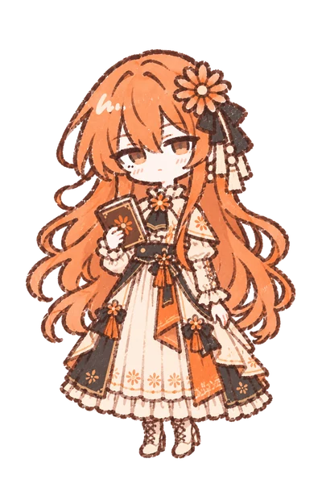
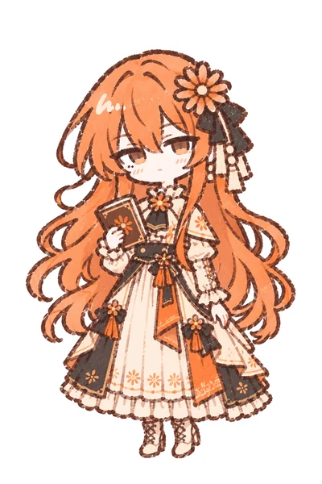
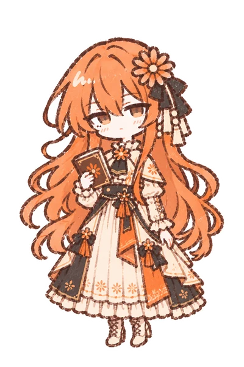
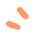
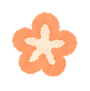

DESKTOP PET · PROMPT SHEET
以你的初始立绘为唯一参考，覆盖设定补全、三档动作、特效与界面。复制时会自动拼上角色锁定描述和输出规格，粘贴到生成工具、同时上传白底参考图即可。

每次都上传白底参考图。文件已在对话里发给你。不要上传透明底的版本，部分工具会把透明区域当成黑色。
先做「设定补全」。三视图和表情表各挑一张满意的，之后和参考图一起上传，侧面动作和情绪动作会稳定很多。
按 P0 → P1 → P2 生成动作。P0 做完，桌宠就能跑起来。
再做特效和对话气泡。
把结果发给我。我来抠图、切帧、按锚点对齐，导出统一画布和精灵图。
这一步直接在你的原图上处理，没有经过 AI 重绘，所以和原画逐像素一致。图片文件已在对话中发送。

base_reference_white.png上传给生成工具。去掉了装饰符号；人物等比缩到画面高度的 85%，脚底离底边 5%，四周留出做动作的空间。base_transparent.png桌宠的待机帧，可直接使用。发丝之间的空隙也已抠成透明。
base_sticker.png白色描边能盖住抠图毛边，在深色壁纸上更干净。喜欢这种风格的话，后续动作我可以统一加边。
fx_notice.png惊觉短线，配“被戳”
fx_flower.png小花，配“开心”“摸头”先补全设定，后面的动作都会更稳。眨眼和口型是在参考图上局部修改，不换姿势。
做完这一组，桌宠就能站、走、被拎起、落地、坐下和睡觉。
日常小动作和情绪反应，让她更像一个有小脾气的人。
程序支持窗口和屏幕边缘交互时再做。
符号和气泡单独做成图层，由程序叠加在角色附近，可以淡入、上浮或弹跳。
生成之后的整理标准。发给我处理时也按这一套来。
| 布局 | 画布 | 单格 | 用于 |
|---|---|---|---|
| 单张 | 1024×1536 | — | 单帧动作 |
| 2 列 × 1 行 | 1536×1024 | 768×1024 | 两帧动作 |
| 2 列 × 2 行 | 1024×1536 | 512×768 | 行走、小跑 |
| 3 列 × 1 行 | 1536×1024 | 512×1024 | 三视图 |
| 3 列 × 3 行 | 1024×1024 | 341×341 | 表情表 |
| 4 列 × 3 行 | 1536×1024 | 384×341 | 特效表 |
动作_帧号.png，如 walk_01.png … walk_04.pngblink_half.png、blink_closed.png、talk_open.png